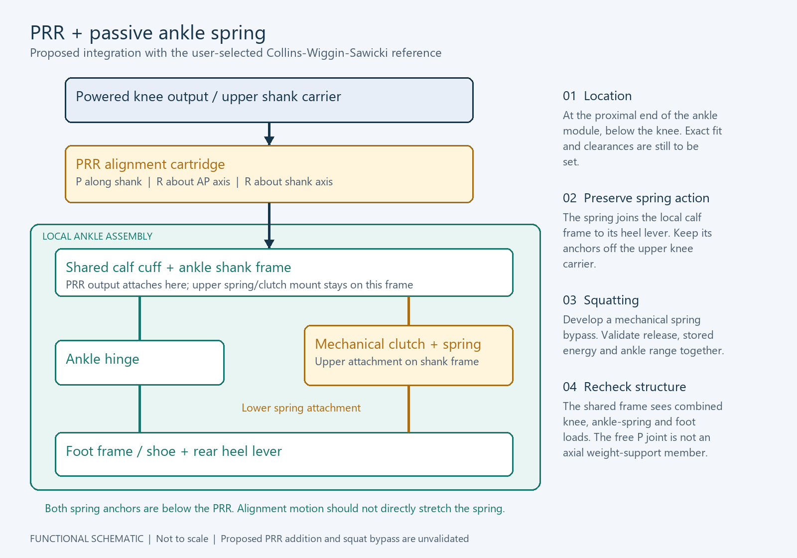
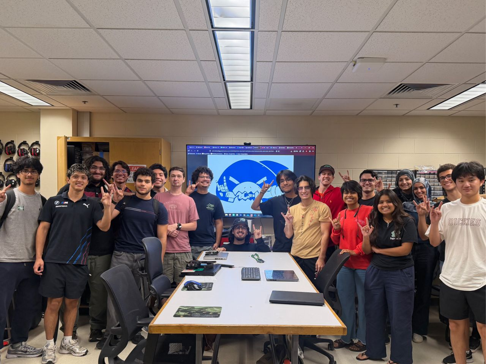
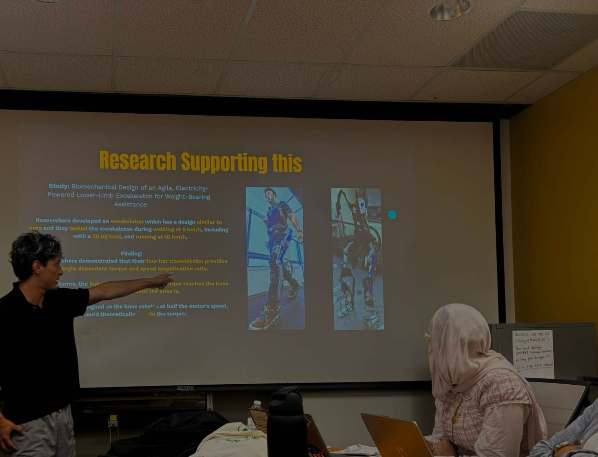
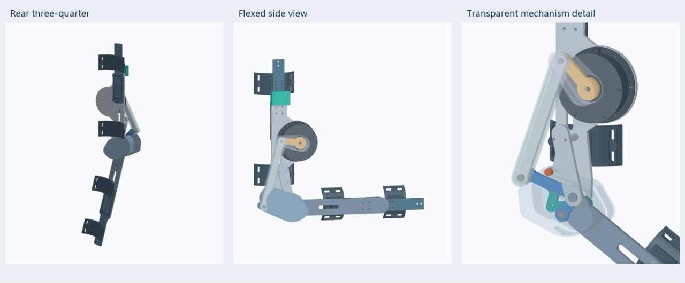

01 / IEEE USF / MECHANICAL INTEGRATION
Engineering for human movement.
Mechanical subsystem development for a unilateral lower-limb exoskeleton, connecting actuator packaging, adjustable structures, and the human interface.
- MY ROLE
- Mechanical team contributor · CAD, subsystem integration & documentation
- WHEN
- 2026 — Present
- STATUS
- CAD development


Original CAD exports · Geometry and component colors preserved.
MOTION STUDIES / PLAY TO EXPLORE
Polycentric knee motion.
Two views of the earlier four-bar knee design: the transparent guard reveals the linkage, while the opaque view shows the enclosed assembly.
Transparent guard
14 seconds · 1080p · Full assembly and linkage close-up through a 0° → 150° → 0° cycle.
Open video ↗Opaque guard
14 seconds · 1080p · The same bend-and-return motion with the guard in place.
Open video ↗Prescribed, unloaded CAD motion from the earlier polycentric knee design, preceding the current at-joint architecture.
The challenge
A wearable mechanism has to align with the person while leaving room for movement, adjustment, hardware, and wiring. The team’s architecture targets powered hip and knee joints with a passive ankle.
My contribution
I support CAD assembly development, actuator interfaces, structural links, cuffs and straps, alignment features, fabrication drawings, bills of materials, fit checks, and assembly documentation. Recent work explores an enclosed hip actuator and an adjustable femur rail with a wraparound guide housing.
Design decisions
The current hip direction places actuation at the joint and allows passive frontal movement. A removable vented cap and connector bridge make actuator packaging and service access part of the design. An indexed slider separates wearer adjustment from the main structural layout.
Evidence & current outcome
The saved integrated hip CAD rebuilt in five discrete poses. The hand-built femur assembly documents the rail, slider, and housing relationship. These are CAD and fit-check artifacts; the replacement knee, full-limb integration, and physical validation remain in development.
What comes next
Resolve the recorded rail/lug interference and harness routing at deep-flexion poses, finish slider travel and retention, and complete structural and unworn bench checks before fabrication or wearer testing.
From analysis to CAD
My original portfolio includes a two-link sagittal-plane reference model and a planned OpenSim workflow: scale a participant model, run inverse kinematics and dynamics, and use joint angles and moments to inform motion limits and actuator requirements. These describe design inputs and planned analysis, not completed simulation results.

IEEE EXO / THE TEAM
Engineering is a
team effort.
Mechanical, electrical, controls, and biomechanics work come together through the IEEE EXO team at USF.

RESEARCH / COMMUNICATE / ITERATE
Taking the design
to the team.
I presented my earlier polycentric knee concept and the research behind its four-bar linkage to the IEEE EXO team. The discussion explored potential benefits in packaging, weight distribution, biomechanics, and torque transmission.
Read my presentation post ↗

More work. More ways to solve a problem.
Explore all projects ↗